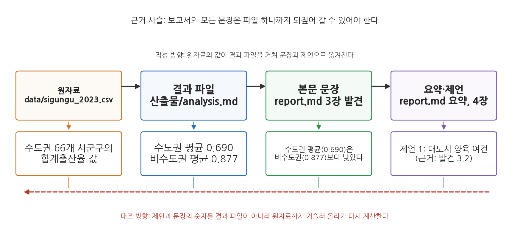
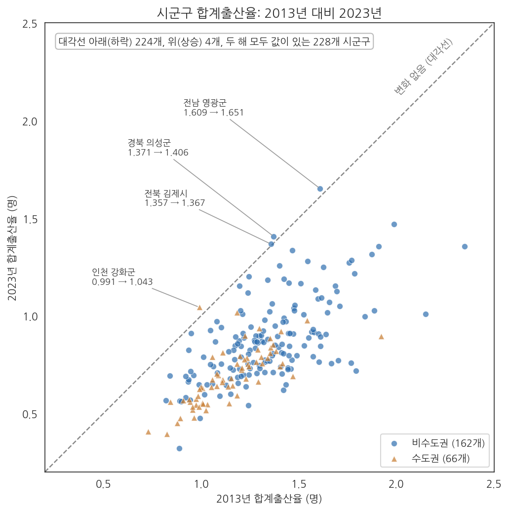
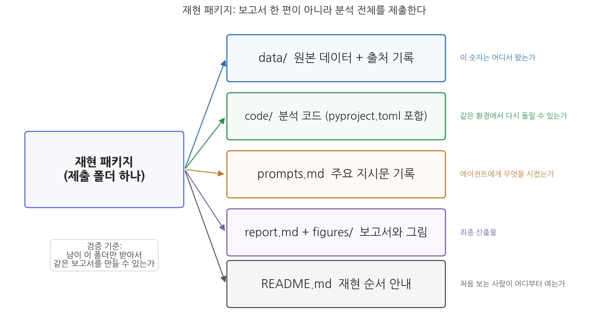

14주차 2회차. 종합 프로젝트: 나의 분석 보고서
최종 수정: 2026-09-03 · 이 교재는 학기 중에도 계속 업데이트됩니다
이 실습에서 하는 것
한 학기의 마지막 실습이다. 6주차에 정한 학기 프로젝트 주제로, 13주차까지 다듬어 온 데이터와 파이프라인 산출물을 한 편의 정책 분석 보고서로 완성한다. 오늘의 목표는 새로운 분석을 추가하는 것이 아니라, 이미 검증된 분석을 남이 믿고 쓸 수 있는 문서와 패키지로 만드는 것이다.
완성 산출물은 두 가지다.
- 보고서: 1회차의 표준 구조(요약-배경-데이터와 방법-발견-제언-부록)를 갖추고, 삼중 대조를 통과했으며, AI 활용 내역이 명시된
report.md - 재현 패키지: 데이터, 코드, 지시문 기록, 보고서를 한 폴더에 담아 "남이 이 폴더만 받아서 같은 결과를 재현할 수 있는" 상태로 꾸린 제출 폴더
작업 순서는 뼈대 잡기(2.1) → 초안 작성(2.2) → 삼중 대조(2.3) → 제언과 근거 잇기(2.4) → 한계 절 작성(2.5) → 요약 다시 쓰기(2.6) → 동료 검토(2.7) → 패키지 꾸리기와 재실행(2.8) → AI 활용 내역 작성(2.9) → 최종 점검 문답(2.10)이다. 마지막 2.11은 시간이 남을 때 하는 선택 심화다. 단계가 많아 보이지만 2.3부터 2.6까지는 모두 "초안을 읽고 고치는" 한 덩어리의 일을 대조 대상별로 나눈 것이고, 실제로는 두 번의 수업(초안과 대조, 검토와 제출)에 걸쳐 진행한다. 특히 2.7의 동료 검토에서는 옆 사람의 보고서를 검증하는 심사자 역할을 직접 해 본다. 검증하는 눈은 검증받아 볼 때 가장 빨리 자란다.
시연은 13주차 공통 예제("지난 10년 사이 시군구 출산율은 어떻게 변했고, 고령화와 어떤 관계가 있는가")로 진행한다. 13주차 output/ 폴더의 merged.csv, analysis.md, 그림 두 장, report.md가 그대로 오늘의 재료다. 본문의 수치는 모두 data/ 폴더의 원본에서 계산한 값이며, 각자의 프로젝트에서는 자기 데이터로 같은 절차를 밟는다.
준비물
| 구분 | 내용 |
|---|---|
| 프로젝트 | 6주차에 시작해 13주차까지 다듬어 온 학기 프로젝트 폴더 (정제 데이터, 분석 코드, 그림, 13주차 파이프라인 산출물 output/) |
| 데이터 | 각자의 프로젝트 데이터. 예시 시연은 data/sigungu_2023.csv(전국 229개 시군구 인구·합계출산율, 출처: 행정안전부 주민등록인구통계·국가데이터처(옛 통계청) 인구동향조사, KOSIS에서 수집), data/sigungu_tfr_2013.csv(2013년 시군구 합계출산율), 7주차에 병합한 data/sigungu_tfr_2013_2023.csv 기준 |
| 도구 | VSCode + Claude Code, uv 환경(3주차), 13주차에 등록한 verifier 서브에이전트(.claude/agents/verifier.md) |
| 선수 내용 | 14주차 1회차 (보고서 구조, 삼중 대조, AI 사용 명시), 13주차 2회차 (파이프라인, 재현성 테스트, verifier), 10주차 2회차 (사실·해석·제언의 세 층, 단위 표기), 2주차 (계획 모드, 검증 손잡이, 독립 검산, 지시문 라이브러리) |
2.1 보고서 뼈대 잡기: 근거 지도 만들기
무엇을 왜 하는가. 보고서 초안은 한 번의 지시로 만들지 않는다. 2주차에서 배운 대로 큰 일은 쪼갠다. 뼈대를 먼저 합의하고, 장별로 따로 지시하고, 장마다 검증한다. 그런데 뼈대를 잡을 때 목차만 정하면 절반이다. 나머지 절반은 각 소절이 어느 파일의 어느 값에 기대는지를 미리 확인해 두는 일, 곧 근거 지도다. 그림 14-3가 그 원리를 보여 준다.

그림 14-3를 읽는 법은 이렇다. 위쪽 네 상자는 숫자가 지나가는 네 정거장이다. 원자료의 값이 결과 파일의 통계량이 되고, 그 통계량이 본문 문장에 인용되며, 문장이 요약과 제언의 근거가 된다. 아래 상자는 시연 예제에서 실제로 옮겨지는 값이다. 검은 화살표가 작성 방향이고, 붉은 점선 화살표가 대조 방향이다. 여기서 알 수 있는 것은 두 가지다. 보고서의 어느 문장이든 왼쪽으로 되짚어 가면 파일 하나에 닿아야 한다는 것, 그리고 대조가 결과 파일에서 멈추지 않고 원자료까지 가야 한다는 것이다. 결과 파일 자체가 틀렸을 가능성은 결과 파일로는 잡을 수 없다.
무엇을 말할 보고서인지는 에이전트가 아니라 여러분이 정한다. 장마다 어떤 질문에 답할 것인지 한 문장으로 정하고, 그 답이 어느 파일의 어느 값에 기대는지는 에이전트에게 파일을 열어 확인시킨다. 시연 예제라면 배경은 12주차 근거 메모에, 데이터와 방법은 output/정제로그.md에, 발견 세 소절은 output/analysis.md와 그림 두 장에 기댄다.
"내 학기 프로젝트의 최종 보고서를 쓰려고 한다. 계획 모드로 목차 초안부터 잡아 줘. 구조는 요약-배경-데이터와 방법-발견-제언-부록의 6개 장으로 하고, output 폴더의 결과 파일과 그림을 하나씩 열어 소절마다 실제로 근거가 있는지 확인해 줘. 근거 파일이 없는 소절은 '근거 없음'이라고 표시하고, 필요한 계산이 무엇인지 적어 줘. 아직 본문은 쓰지 마."
예상되는 에이전트의 행동과 결과. 계획 모드에서 에이전트가 output/ 폴더의 파일을 차례로 읽는다. 도구 사용 로그의 순서는 대개 output 폴더 목록 조회, analysis.md와 정제로그.md 읽기, 그림 파일 존재 확인의 차례이며, 소절 수만큼 파일 읽기가 나타난다. 그리고 다음과 같은 목차안을 돌려준다.
3. 발견
3.1 10년 사이 출산율은 얼마나 내려갔나
근거: output/fig_change.png (그림만 있음) -> 근거 없음
필요한 계산: merged.csv에서 2013·2023년 평균, 상승·하락 시군구 수
3.2 수도권과 비수도권은 다른가
근거: output/analysis.md [1] 수도권 0.690 (n=66), 비수도권 0.877 (n=162)
3.3 고령화와 출산율은 어떤 관계인가
근거: output/analysis.md [3] 기울기 0.00955, R제곱 0.154, fig_scatter.png
본문 작성은 시작하지 않고 계획 승인을 기다린다. 3.1에 "근거 없음"이 표시되었다면 지시문의 검증 손잡이(없다고 답할 자리)가 제 몫을 한 것이다. 반대로 3.1에 "근거: fig_change.png"라고만 적고 넘어갔다면, 그림을 근거로 착각한 것이므로 "그림은 근거 파일이 아니다. 숫자가 적힌 결과 파일이 있는지만 확인해"라고 되묻는다. 여기서 눈여겨볼 것이 발견 3.1이다. 13주차 analysis.md에는 수도권 비교와 회귀만 있고 10년 변화의 통계량은 없다. 그림은 있는데 숫자 파일이 없는 소절이 이렇게 드러나면, 초안 전에 결과 파일부터 만들어야 한다는 신호다. 뼈대 단계에서 발견하는 것과 초안을 다 쓴 뒤 발견하는 것은 비용이 크게 다르다.
검증. 목차안의 근거 파일 이름을 하나씩 output/ 폴더의 실제 파일과 대조한다. 폴더에 없는 파일을 전제로 한 소절이 있으면 이 단계에서 걸러 낸다. "근거 없음"으로 표시된 소절은 초안에 앞서 결과 파일을 먼저 만든다. 시연 예제라면 "output/merged.csv에서 두 해 모두 값이 있는 시군구의 2013년·2023년 평균과 상승·하락 시군구 수를 계산해 output/change.md로 저장해 줘"라고 지시하고, 결과(228개 중 하락 224개, 상승 4개, 2013년 평균 1.289명에서 2023년 0.823명으로 0.467명 하락)를 받는다. 이 새 결과 파일도 13주차 검문소의 방식대로 대표 수치 하나(하락 224개)를 다른 경로로 재검산해 둔다. 목차는 여러분이 고쳐서 확정한다.
2.2 보고서 초안을 에이전트와 함께 작성하기
무엇을 왜 하는가. 각 장은 성격이 달라서 지시문도 달라야 한다. "데이터와 방법"은 사실의 기록이므로 파일에 근거하게 하고, "발견"은 해석이 들어가므로 과잉해석을 막는 제약을 걸고, "요약"은 본문이 완성된 뒤 본문에서만 뽑게 한다. 그리고 각 문단에 근거 파일과 그림 번호를 달게 한다. 2.1의 근거 지도가 초안 문단 하나하나에 심어지는 것이다.
1단계: "데이터와 방법"과 "발견" 장 초안.
"확정한 목차대로 '데이터와 방법' 장과 '발견' 장의 초안을 report.md에 작성해 줘. 제약이 네 가지 있다. (1) 모든 수치는 output 폴더의 결과 파일(analysis.md, change.md, 정제로그.md)에서 가져오고, 기억이나 추정으로 숫자를 쓰지 마. (2) '발견'의 각 소절은 질문 한 문장으로 시작하고, 근거 숫자를 제시한 뒤, 함의와 한계를 한 문장씩 붙이는 구조로 써. (3) 상관관계를 인과관계처럼 서술하지 마. (4) 각 문단 끝에 근거 파일명과 항목, 그림 번호를 대괄호 주석으로 임시로 달아 줘. 결과 파일에 없는 수치가 필요하면 쓰지 말고 '계산 필요'라고 표시해."
예상되는 에이전트의 행동과 결과. 결과 파일 세 개를 읽고 두 장의 초안을 작성한다. "데이터와 방법" 장은 정제로그를 산문으로 옮긴 꼴이 된다. "2023년 시군구 인구·출산 지표(229행)와 2013년 합계출산율(264행)을 시도·시군구를 키로 병합했다. 2013년 파일의 인천 남구는 현재 이름인 미추홀구로 연결했고, 2023년 합계출산율 결측 1곳(경북 군위군)은 제외했으며, 두 해 모두 값이 있는 228개 시군구를 분석했다. [근거: 정제로그.md]" 같은 문단이다. "발견" 장에서는 제약 (2) 덕분에 1회차에서 본 질문-근거-함의 문단이 만들어지고, 제약 (4) 덕분에 문단마다 다음과 같은 꼬리가 붙는다.
3.2 수도권과 비수도권은 다른가
수도권 66개 시군구의 2023년 합계출산율 평균은 0.690명으로, 비수도권 162개
시군구의 0.877명보다 0.187명 낮았다. (...) 다만 이는 권역 평균의 차이이며,
수도권 안에도 인천 강화군(1.043)처럼 비수도권 평균을 넘는 곳이 있다.
[근거: analysis.md 항목 [1]. 강화군 값은 merged.csv] (그림 없음)
검증. 초안을 처음부터 끝까지 읽는다. 이때 에이전트가 틀리는 전형적 장면을 하나 보자. 시군구 출산율 예시 프로젝트에서 이 지시를 실행했을 때, 에이전트가 "수도권 평균 0.690은 비수도권 평균 0.877의 절반 수준이다"라고 쓴 일이 있다. 숫자 두 개는 결과 파일과 정확히 일치했다. 그러나 0.690은 0.877의 약 79퍼센트이지 절반이 아니다. 숫자는 옮겨 오면서, 숫자 사이의 관계는 문장을 유창하게 만들다가 지어낸 것이다. 이런 오류는 숫자 대조만으로는 안 잡히고, 문장이 주장하는 비교("절반", "두 배", "가장 크다")를 직접 암산해 봐야 잡힌다. 초안을 읽을 때는 숫자만 보지 말고 숫자를 잇는 동사와 수식어를 의심하라. 근거 주석도 확인한다. "[근거: analysis.md 항목 [1]]"이 달린 문단의 숫자를 실제로 그 항목에서 찾을 수 있는가. 찾을 수 없는 주석이 하나라도 있으면 그 문단은 결과 파일이 아니라 기억에서 나온 것이다.
2단계: 제언, 배경, 그리고 마지막에 요약.
"report.md의 '발견' 장은 내가 수정을 마쳤다. 이제 (1) 각 제언이 어느 발견에서 나왔는지 괄호로 표시하는 방식으로 '제언' 장 초안을 쓰고, (2) 본문 전체에서만 근거를 가져와 '요약'을 1쪽 이내로 작성해 줘. 요약에는 핵심 질문, 주요 발견 3개(수치 포함), 제언을 담아. 본문에 없는 내용을 요약에 새로 만들어 넣지 마."
예상되는 에이전트의 행동과 결과. 발견과 짝지어진 제언, 그리고 1쪽 요약이 만들어진다. "본문에 없는 내용 금지" 제약은 요약 단계에서 본문에 없는 내용이 끼어드는 것을 막는 장치다. 화면에는 "제언 1. (...) (발견 3.2)"처럼 발견 번호가 붙은 제언 문단과, 핵심 질문 한 줄, 발견 세 줄, 제언 두세 줄로 된 요약이 보인다.
검증. 요약의 모든 문장에 대해 "본문 몇 장에 이 내용이 있는가"를 손가락으로 짚어 본다. 본문에 짝이 없는 문장이 하나라도 있으면 삭제하거나 본문을 보강한다. 제언 장에서는 발견과의 연결 표시가 실제로 그 발견을 가리키는지 확인한다. 제언의 근거 연결은 2.4에서 다시 점검한다.
2.3 삼중 대조 실행: 숫자·인용·그림
무엇을 왜 하는가. 초안이 완성되었으니 1회차 1.3절의 삼중 대조를 실행한다. 요령은 대조표 작성은 에이전트에게 맡기고, 판정은 사람이 하는 것이다. 그리고 그림 14-3에서 본 대로, 숫자 대조의 기준은 결과 파일이 아니라 원자료다.
대조 1: 숫자.
"verifier 서브에이전트를 써서 report.md 본문에 등장하는 모든 수치를 추출하고 대조표를 만들어 줘. 열은 5개다: 본문의 문장(수치 포함), 본문 수치, 결과 파일의 값(파일명과 항목), 원본 데이터에서 다시 계산한 값(계산에 쓴 코드도 함께), 일치 여부. 재계산은 반드시 data 폴더의 원본 데이터에서 새 코드로 해. 결과 파일이나 본문을 베끼면 안 된다. 결과 파일에 없는 수치는 '결과 파일 없음'이라고 표시해. 결과를 check_numbers.md로 저장해 줘."
예상되는 에이전트의 행동과 결과. 본 에이전트가 verifier에게 일을 넘기고, verifier가 본문에서 수치가 든 문장을 뽑은 뒤 원본 데이터를 읽는 코드를 실행해 대조표를 만든다. 13주차에서 배운 대로, 보고서를 함께 쓴 대화는 자기가 쓴 숫자를 옳다고 믿는 상태이지만 verifier는 원자료와 보고서만 받는 감사관이다. verifier의 보고는 13주차 지침대로 "대조 대상: report.md, 원자료: data/sigungu_2023.csv(229행), data/sigungu_tfr_2013_2023.csv(229행), 추출한 수치 14개, 일치 13개, 불일치 1개, 확인 불가 0개"처럼 머리말로 시작하고, 그 아래 대조표가 이어진다. 시연 예제에서 나온 대조표의 일부가 표 14-2다.
표 14-2. 숫자 대조표 check_numbers.md의 예 (시연 예제, 일부)
| 본문 문장 | 본문 수치 | 결과 파일 | 원자료 재계산 | 판정 |
|---|---|---|---|---|
| 수도권 66개 시군구의 평균은 0.690명 | 0.690 | analysis.md [1] 0.690 | sigungu_2023.csv, 서울·경기·인천 66개 평균 0.6901 | 일치 |
| 비수도권 평균 0.877명보다 0.187명 낮았다 | 0.877 / 0.187 | analysis.md [1] 0.877 | 162개 평균 0.8766, 차이 0.1865 | 일치 |
| 인구밀도와의 상관계수는 -0.599 | -0.599 | 결과 파일 없음 | sigungu_2023.csv 228개, r = -0.5990 | 일치. 결과 파일에 추가 |
| 10년 사이 약 90%의 시군구에서 출산율이 하락했다 | 약 90% | 결과 파일 없음 | merged.csv 228개 중 하락 224개 = 98.2% | 불일치 |
| 2013년 평균 1.289명에서 2023년 0.823명으로 | 1.289 / 0.823 | change.md 1.289 / 0.823 | 228개 평균 1.2892 / 0.8227 | 일치 |
여기서 에이전트가 틀리는 두 번째 장면을 보자. 넷째 행이 그 장면이다. 이런 초안이 나왔다고 하자(실제로 흔한 유형이다). 첫째, 틀림. 초안의 발견 3.1에 "약 90%"라는 수치가 들어 있는데, change.md에는 하락 시군구 수(224개)와 비율(98.2%)이 있을 뿐 90%라는 숫자는 어디에도 없다. 에이전트가 "대부분"이라는 인상을 그럴듯한 반올림 숫자로 바꿔 쓴 것이다. 둘째, 발견. 원자료에서 다시 세면 228개 중 224개, 98.2%다. 90과 98은 둘 다 "대부분"이지만, 보고서의 숫자는 인상이 아니라 계산이어야 한다. 셋째, 재지시. "발견 3.1의 '약 90%'는 결과 파일에 없는 수치다. change.md의 값으로 고치고, 상승한 4곳의 이름을 함께 적어 줘." 넷째, 수정. "228개 중 224개(98.2%)에서 하락했고, 상승한 곳은 경북 의성군, 인천 강화군, 전남 영광군, 전북 김제시 4곳뿐이었다"로 바뀐다. 결과 파일에 없는 수치를 "없음"으로 표시하게 한 손잡이가 이 발견을 만들었다.
검증. 대조표에서 불일치 행을 모두 확인해 본문 또는 분석을 고친다. 그리고 "일치"로 표시된 행 중 핵심 수치 3개를 골라 여러분이 직접 재계산한다. 에이전트에게 계산 과정을 한 단계씩 보여 달라고 해도 좋고, 데이터 파일을 열어 손으로 세어도 좋다. 시연 예제에서 손으로 확인하기 쉬운 것은 개별 값이다. sigungu_2023.csv를 VSCode로 열어 124행(1행은 열 이름)의 부산 중구 합계출산율이 0.320인지, 180행의 전남 영광군이 1.651인지 본다. 대조표 자체도 에이전트의 산출물이므로 표본 검사를 거쳐야 한다는 것, 7주차의 표본 대조 원칙 그대로다. 마지막으로 새 대화를 열어 2주차의 독립 검산을 한 번 한다. "data/sigungu_2023.csv에서 서울·경기·인천 시군구의 합계출산율 평균을 계산해 줘. 결측은 제외하고 개수도 보고해"라고만 묻고, 0.690과 66이 나오는지 본다.
대조 2: 인용. 인용문이 있다면 원문 문서를 화면에 나란히 띄워 문장을 눈으로 대조한다(12주차에서 연습한 방식이다). 12주차 근거 메모로 만든 법령 인용이 배경 장에 들어갔다면, 조문 번호와 인용문이 저장해 둔 원문 파일과 글자 단위로 같은지 Ctrl+F로 확인한다. 인용이 없는 보고서라면 이 대조는 건너뛴다.
대조 3: 그림.
"report.md에서 그림을 참조하는 문장을 모두 찾아서, 그림 번호별로 (1) 본문이 그 그림에 대해 주장하는 내용 한 줄, (2) 그림 파일 경로, (3) 그림의 제목·축 이름·연도를 표로 정리해 줘. 그림이 실제로 그 주장을 보여 주는지는 내가 눈으로 판단하겠다."
예상되는 에이전트의 행동과 결과. 그림 참조 문장과 파일 경로, 축 정보가 짝지어진 표가 나온다. 판단을 사람 몫으로 남겨 두었다는 점에 주의하라. 그림과 본문의 일치는 보고서 신뢰의 마지막 방어선이므로 최종 판정은 눈으로 한다. 시연 예제의 그림 2(10년 변화)를 교재의 그림 14-4로 다시 그려 두었다.

그림 14-4를 읽는 법은 이렇다. 가로축이 2013년, 세로축이 2023년의 합계출산율이고, 점 하나가 시군구 하나다. 점선 대각선은 두 해의 값이 같은 자리이므로, 대각선 아래의 점은 10년 사이 출산율이 내려간 곳이다. 세모가 수도권, 동그라미가 비수도권이다. 여기서 알 수 있는 것은 거의 모든 점이 대각선 아래에 있다는 것(하락 224개), 대각선 위의 점은 이름표가 붙은 4개뿐이라는 것, 그리고 2013년에 값이 높았던 곳(가로축 오른쪽)일수록 대각선에서 멀리 떨어져 있다는 것이다.
검증. 표의 각 행에 대해 그림 파일을 실제로 열어 본문의 주장과 맞는지 확인한다. 축 라벨, 단위, 연도가 본문 서술과 같은지, 본문이 "가장 낮다"고 말한 항목이 그림에서도 가장 낮은지 본다. 그림 대조가 잡는 불일치의 예를 하나 들자. 초안이 "그림 2에서 보듯 수도권의 하락 폭이 비수도권보다 컸다"고 썼다고 하자. 그림 14-4에서 세모와 동그라미가 대각선에서 떨어진 정도는 비슷해 보인다. 원자료로 재계산하면 수도권은 평균 0.458명, 비수도권은 0.470명 하락으로 오히려 비수도권이 조금 더 크다. 문장은 "두 권역의 하락 폭은 비슷했다(수도권 0.458명, 비수도권 0.470명)"로 고친다. 그림이 보여 주지 않는 주장을 그림에 기대어 쓰는 것, 이것이 그림 대조가 잡아내는 오류다.
2.4 제언과 근거 잇기: 과잉 제언 걸러내기
무엇을 왜 하는가. 제언은 분석가가 이름을 거는 층이다(10주차 표 10-8). 그래서 제언 장의 흔한 오류는 숫자가 틀리는 것이 아니라, 데이터가 지지하지 않는 제언이 그럴듯하게 들어오는 것이다. 각 제언이 어느 발견에 기대는지를 표로 잇고, 연결이 끊긴 제언을 걸러 낸다.
"report.md의 제언 장에 있는 제언을 모두 뽑아서 표로 정리해 줘. 열은 4개다: 제언 문장, 근거가 되는 발견 번호와 그 발견의 핵심 수치, 이 제언이 그 발견에서 따라 나오는지에 대한 너의 판단(따라 나옴 / 부분적 / 근거 없음), 판단 이유 한 줄. 판단이 '근거 없음'이어도 제언을 고치지 말고 표시만 해. 최종 판단은 내가 한다."
예상되는 에이전트의 행동과 결과. 제언 장을 읽고 발견 장의 수치를 찾아 붙인 표를 돌려준다. 시연 예제에서 나온 표가 표 14-3이다.
표 14-3. 제언-근거 연결표 (시연 예제)
| 제언 | 근거 발견과 수치 | 판단 | 이유 |
|---|---|---|---|
| 저출산 대응의 초점을 지방 소멸 지역만이 아니라 청년이 밀집한 대도시의 주거·양육 여건으로 넓힐 필요가 있다 | 발견 3.2 (수도권 0.690 vs 비수도권 0.877, 인구밀도 상관 -0.599) | 따라 나옴 | 밀도가 높고 수도권일수록 낮다는 사실에서 초점 확장을 조건부로 제안 |
| 고령인구비율이 높은 지역의 출산 지원은 줄여도 된다 | 발견 3.3 (기울기 0.00955, R제곱 0.154) | 근거 없음 | 상관을 인과로 읽었고, 설명력 15%의 관계로 예산 축소를 말할 수 없음 |
| 수도권 신혼부부 주거 지원 예산을 20% 늘려야 한다 | 발견 3.2 | 근거 없음 | 20%라는 규모는 어떤 분석에서도 나오지 않음. 데이터 밖의 숫자 |
| 출산율이 오른 4곳(의성·강화·영광·김제)의 정책 사례를 조사할 필요가 있다 | 발견 3.1 (상승 4곳) | 부분적 | 조사 필요성은 따라 나오나, 상승이 정책 효과라고 말할 근거는 없음 |
둘째와 셋째 제언은 에이전트가 초안에 넣은 것이다. 둘 다 문장은 매끄럽고 발견 번호도 달려 있다. 그러나 둘째는 10주차에서 잡았던 과잉해석이 제언의 옷을 입고 돌아온 것이고, 셋째는 데이터에 없는 숫자(20%)가 제언의 구체성을 꾸미는 데 쓰인 것이다. 연결표가 없으면 "발견 3.2"라는 꼬리표만 보고 통과시키기 쉽다.
검증. 판단 열은 에이전트의 의견일 뿐이므로 행마다 여러분이 다시 판정한다. 기준은 세 가지다. 제언에 든 숫자와 방향이 발견의 숫자와 방향에서 나오는가, 상관을 인과로 바꾸지 않았는가, 제언의 규모(얼마나, 언제까지)가 데이터 밖에서 오지 않았는가. "근거 없음" 제언은 삭제하거나 "추가 분석이 필요하다"는 조건부 제언으로 바꾼다. 시연 예제에서는 둘째와 셋째를 삭제하고 넷째를 "상승 원인은 본 분석의 범위 밖이므로 사례 조사가 선행되어야 한다"는 조건부 제언으로 바꿔 제언 2개가 남았다. 남은 제언마다 근거 발견을 괄호로 본문에 남긴다. 그것이 1회차 표 14-1의 "발견과 제언의 연결 고리를 명시"다.
2.5 한계 절 작성과 근거 연결
무엇을 왜 하는가. 1회차 1.1절에서 좋은 문단은 함의로 끝맺되 한계를 함께 적는다고 배웠고, 1.4절에서 "데이터에 없는 사람은 누구인가"를 한계에 포함하라고 배웠다. 그런데 한계 절은 에이전트가 가장 상투적으로 쓰는 절이기도 하다. 어떤 분석에나 붙일 수 있는 문장("표본 크기의 한계", "추가 연구가 필요하다")은 한계가 아니라 장식이다. 이 단계에서는 한계를 정제로그와 결과 파일에서 뽑아, 각 한계가 어느 발견에 어떻게 영향을 주는지 표로 잇는다. 2.4에서 제언을 발견에 이었던 것과 같은 원리를 한계에 적용하는 것이다.
"report.md의 '발견' 장 끝에 넣을 '한계' 소절의 재료를 표로 만들어 줘. output/정제로그.md와 output/analysis.md, 그리고 '데이터와 방법' 장을 읽고, 이 분석의 결과 해석에 영향을 주는 한계를 뽑아. 열은 4개다: 한계, 근거 파일과 위치, 영향을 받는 발견 번호, 그 발견의 해석을 어떻게 제한하는가 한 문장. 파일에서 근거를 찾을 수 없는 한계는 넣지 마. 다만 상관과 인과의 구분, 집계 데이터의 성격, 데이터에 기록되지 않은 사람에 관한 한계는 파일 근거가 없어도 넣되 '방법상 한계'라고 표시해."
예상되는 에이전트의 행동과 결과. 정제로그의 처리 기록(미추홀구 연결, 군위군 결측, 2013년 파일에만 있는 36행, 청주시 관할 변경)과 analysis.md의 R제곱을 근거로 표를 만든다. 시연 예제의 결과가 표 14-4다.
표 14-4. 한계-근거 연결표 (시연 예제)
| 한계 | 근거 파일과 위치 | 영향받는 발견 | 해석의 제한 |
|---|---|---|---|
| 2023년 합계출산율 결측 1곳(경북 군위군, 2023년 7월 대구 편입) | 정제로그.md 결측 항목 | 3.1, 3.2, 3.3 | 모든 평균·상관은 228개 기준이며 229개가 아니다 |
| 충북 청주시의 2013년 값은 2014년 통합 전 옛 청주시의 값 | 정제로그.md 병합 항목 | 3.1 | 청주시의 10년 변화는 관할 범위가 다른 두 값의 비교다 |
| 2013년 파일에만 있어 짝이 없는 36행(대부분 큰 시의 일반구)은 제외 | 정제로그.md 병합 항목 | 3.1 | 정보 손실은 아니나, 큰 시 안의 구별 변화는 볼 수 없다 |
| 고령인구비율의 설명력이 R제곱 0.154에 그침 | analysis.md [3] | 3.3 | 시군구 간 출산율 차이의 약 85%는 이 관계 밖의 요인이다 |
| 관찰 자료의 상관·회귀 (방법상 한계) | 없음 | 3.2, 3.3 | 인구밀도나 고령화가 출산율을 낮추거나 높인다고 말할 수 없다 |
| 시군구 단위 집계 자료 (방법상 한계) | 없음 | 3.2, 3.3 | 지역 평균의 관계를 개인의 선택으로 읽을 수 없다 |
| 주민등록 기준 인구 (방법상 한계) | 데이터와 방법 장 출처 | 3.2 | 등록지와 실제 거주지가 다른 사람은 그 지역 값에 반영되지 않는다 |
| 표본 크기가 작아 일반화에 한계가 있다 | 없음 | (전체) | 근거 없음. 229개 시군구 전수 자료이므로 표본 문제가 아니다 |
마지막 행이 에이전트가 틀리는 네 번째 장면이다. 이런 표가 왔다고 하자. 첫째, 틀림. "표본 크기의 한계"는 통계 보고서의 한계 절에 관습처럼 등장하는 문장이라 에이전트가 근거 없이 끼워 넣기 쉽다. 그러나 이 분석은 전국 229개 시군구 전수를 다뤘으므로 표본이 아니고, 표본 크기가 문제가 될 자리가 없다. 둘째, 발견. 근거 파일 열이 "없음"인데 방법상 한계 표시도 없다. 지시문에서 "파일 근거 없는 한계는 넣지 마"라고 했으므로 규칙 위반이기도 하다. 셋째, 재지시. "마지막 행은 근거가 없고 이 자료는 전수 자료다. 삭제하고, 대신 '2023년 한 해의 단면 자료라 3.1의 두 시점 비교 외에는 시간에 따른 변동을 다루지 않았다'는 한계로 바꿔 줘." 넷째, 수정. 상투적 한계가 이 분석에만 해당하는 한계로 바뀐다.
검증. 표의 행마다 근거 파일을 열어 그 위치에 정말 그 기록이 있는지 확인한다. 정제로그에 미추홀구·군위군·청주시 기록이 없다면 13주차 검문소 기록이 빠진 것이므로 정제로그부터 보강한다. 그다음 표를 산문으로 옮긴 한계 소절 초안을 에이전트에게 받고, 문장마다 표의 어느 행인지 짚는다. 표에 없는 문장이 들어 있으면 그것이 상투구다. 마지막으로 한계 중 하나 이상이 제언 장의 조건("사례 조사가 선행되어야 한다")과 이어져 있는지 본다. 2.4에서 조건부로 바꾼 제언의 조건은 대개 이 표의 어느 행에서 온다.
2.6 요약 다시 쓰기와 본문 대조
무엇을 왜 하는가. 2.2에서 요약을 한 번 썼다. 그 뒤 2.3-2.5에서 본문이 여러 군데 바뀌었다. 숫자가 고쳐졌고(약 90%에서 98.2%로), 문장이 바뀌었고(하락 폭 비교), 제언이 줄었고(4개에서 2개로), 한계가 추가되었다. 요약은 자동으로 따라오지 않는다. 그래서 본문 수정이 끝난 지금 요약을 처음부터 다시 쓰고, 요약의 문장마다 본문에 짝이 있는지 확인한다.
"report.md의 본문(배경, 데이터와 방법, 발견, 한계, 제언)은 수정이 끝났다. 기존 요약을 지우고 본문만 근거로 요약을 다시 써 줘. 구성은 핵심 질문 1문장, 데이터와 방법 1문장, 주요 발견 3개(각각 수치 1개 이상), 한계 1문장, 제언(본문 제언 장에 지금 남아 있는 것만)이다. 문장마다 본문의 어느 장 어느 문단에서 왔는지를 괄호로 표시하고, 본문에 없는 문장은 쓰지 마."
예상되는 에이전트의 행동과 결과. 새 요약이 나오고 문장마다 "(3.1 첫 문단)"처럼 본문 위치가 붙는다. 여기서 에이전트가 틀리는 다섯 번째 장면을 보자. 첫째, 틀림. 새로 쓴 요약인데도 "제언은 세 가지"라는 문장이 들어 있다. 2.4에서 제언 2개를 삭제하고 1개를 조건부로 바꿔 제언 장에는 2개가 남았는데, 같은 대화에 남아 있던 옛 요약의 문장을 에이전트가 재활용한 것이다. 둘째, 발견. 그 문장에 붙은 위치 표시만 "(4장)"이라고 뭉뚱그려져 있다. 다른 문장은 모두 문단까지 가리키고 있으므로 이 문장만 이질적이다. 셋째, 재지시. "요약의 제언 문장은 옛 요약의 것이다. 4장 제언 장을 다시 읽고 지금 남아 있는 제언 2개만으로 다시 써 줘." 넷째, 수정. 2개로 바뀐다. 같은 대화가 길어질수록 옛 판본의 문장이 되살아나는 일이 잦다(2주차에서 배운 맥락창의 성질이다). 요약처럼 마지막에 쓰는 문서는 새 대화에서 파일만 주고 쓰게 하는 편이 더 안전하다.
검증. 요약의 문장마다 괄호가 가리키는 본문 문단을 열어 손가락으로 짚는다. 짝이 없는 문장은 삭제하거나 본문을 보강하고, 수치가 든 문장은 자리수까지 본문과 같은지 본다. 위치 표시가 장 단위로만 뭉뚱그려진 문장이 있으면 그 문장부터 의심한다. 확인이 끝나면 괄호 표시는 지운다.
2.7 동료 검토: 다른 사람의 보고서를 검증해 보기
무엇을 왜 하는가. 실무의 보고서는 반드시 남의 검토를 거친다. 오늘은 그 절차를 워크숍으로 압축해 본다. 목적은 두 가지다. 내 보고서의 빈틈을 남의 눈으로 찾는 것, 그리고 남의 보고서를 검증하는 경험으로 내 검증 감각을 기르는 것.
워크숍 절차 (2인 1조, 약 40분).
- 교환 (5분). 짝과 보고서 초안, 데이터, 코드가 든 프로젝트 폴더를 통째로 교환한다. 보고서 파일만 주고받으면 검증이 불가능하다. 이 경험은 2.8에서 재현 패키지가 왜 필요한지 몸으로 알려 준다.
- 숫자 검증 (15분). 상대 보고서의 요약과 발견 장에서 핵심 주장에 쓰인 수치 3개를 고른다. 상대의 원본 데이터에서 그 수치를 직접 재계산한다. 이때 자신의 에이전트를 써도 된다. 단, 상대의 분석 코드를 실행해 베끼는 것이 아니라 원본 데이터에서 새로 계산하게 한다.
- 독자 검증 (10분). 요약만 읽고 다음 세 질문에 답해 본다. 이 보고서의 핵심 질문은 무엇인가. 가장 중요한 발견은 무엇인가. 제언은 발견과 연결되는가. 답이 막히는 지점이 곧 요약의 결함이다.
- 의견 전달 (10분). 재계산한 세 수치의 일치 여부, 요약만 읽고 파악되지 않았던 것, 고치면 좋을 점 두 가지를 상대에게 말로 전한다. 숫자나 결론이 바뀌는 문제를 먼저 말하고, 서술이나 근거 연결의 문제를 다음에, 표현과 형식의 문제를 마지막에 말한다. 무엇부터 고쳐야 할지가 그 순서로 정해진다.
"이 폴더는 동료의 프로젝트다. 동료의 코드는 실행하지 말고 data 폴더의 원본 데이터만 써서 다음 세 수치를 새로 계산해 줘. (1) 서울·경기·인천 시군구의 2023년 합계출산율 평균, (2) 2013년 대비 2023년에 합계출산율이 하락한 시군구 수와 두 해 모두 값이 있는 시군구 수, (3) 고령인구비율과 합계출산율의 상관계수. 계산에 쓴 파일, 행 수, 결측 처리 방식을 함께 보고해."
예상되는 에이전트의 행동과 결과. 에이전트가 data/ 폴더의 파일만 읽어 세 값을 계산하고, "sigungu_2023.csv 229행, 합계출산율 결측 1개(경북 군위군) 제외, 수도권 66개 평균 0.690" 같은 형식으로 보고한다. 동료의 코드를 열어 보려 하면 막는다. 코드를 보는 순간 독립 검산이 아니게 된다.
검증. 받은 의견은 하나씩 수용 여부를 정하고 그 자리에서 보고서를 고친다. 가상의 예를 둘 들자. 받은 의견이 "요약의 '하락 폭이 비슷했다'가 본문 발견 3.1에 없다"라고 하자. 확인해 보니 2.3의 그림 대조에서 고친 문장이 요약에만 들어가고 본문에는 빠져 짝이 없다. 수용하고 본문 3.1에 같은 문장을 넣는다. 거절하는 의견도 있을 수 있다. "수도권 평균을 인구 가중 평균으로 바꿔야 한다"는 의견은 방법의 선택 문제이므로, 단순 평균을 쓴 이유를 데이터와 방법 장에 적는 것으로 대신한다. 수용이든 거절이든 그 이유를 그 자리에서 댈 수 있어야 한다.
동료의 재계산 값이 내 본문 값과 다르다고 해서 곧장 누가 틀렸다고 단정하지 말 것. 먼저 두 사람이 같은 것을 계산했는지 확인한다. 결측을 뺐는가 포함했는가, 단순 평균인가 가중 평균인가, 어느 시점 데이터인가에 따라 값은 정당하게 달라질 수 있다. 7주차에서 배운 대로 처리 기준이 다르면 숫자가 달라진다. 기준을 맞춘 뒤에도 다르면 그때 오류를 찾는다. 그리고 이 확인이 쉬우려면 보고서의 "데이터와 방법" 장에 그 기준들이 적혀 있어야 한다. 동료 검토는 그 장의 완성도를 시험하는 자리이기도 하다.
2.8 재현 패키지 꾸리기와 다른 폴더에서 재실행
무엇을 왜 하는가. 검토를 반영한 보고서를 포함해, 분석 전체를 재현 패키지로 꾸린다. 그리고 꾸린 패키지를 다른 폴더에서 처음부터 다시 실행해 같은 수치가 나오는지 본다. 13주차의 재현성 테스트가 파이프라인의 시험이었다면, 오늘은 제출물 전체의 시험이다.

그림 14-5을 읽는 법은 이렇다. 왼쪽이 제출 폴더 하나이고, 오른쪽 다섯 개가 그 안에 들어갈 구성 요소다. 각 요소의 오른쪽 글씨는 그 요소가 답하는 질문이다. 데이터는 숫자의 출처를, 코드는 재실행 가능성을, 지시문 기록은 에이전트에게 시킨 내용의 투명성을, README는 진입로를 책임진다. 다섯 가운데 하나라도 빠지면 "남이 재현할 수 있는가"라는 검증 기준이 무너진다는 것이 이 그림의 요점이다.
구성 요소 중 지시문 기록(prompts.md)이 낯설 수 있다. 코드가 "컴퓨터에게 시킨 일"의 기록이라면, 지시문은 "에이전트에게 시킨 일"의 기록이다. 에이전트 기반 분석에서는 같은 코드라도 어떤 지시로 만들어졌는지가 분석 과정의 일부이므로, 주요 지시문을 남기는 것이 1회차에서 배운 투명성의 실천이다. 2주차부터 지시문 라이브러리를 쌓아 왔다면 이 파일은 거의 완성되어 있다.
"제출용 재현 패키지를 꾸리자. submission 폴더를 만들고 (1) data 폴더(원본 데이터와 출처·수집일 기록), (2) code 폴더(분석 코드와 pyproject.toml), (3) 이번 학기 주요 지시문을 단계별로 정리한 prompts.md, (4) report.md와 figures 폴더, (5) 처음 보는 사람이 재현하는 순서를 담은 README.md를 채워 줘. README에는 uv로 환경을 만들고 코드를 실행하는 명령을 순서대로 적어. 코드가 읽는 모든 데이터 파일이 data 폴더에 있는지 코드를 열어 확인하고, 다 만들면 폴더 구조를 보여 줘."
예상되는 에이전트의 행동과 결과. 폴더를 만들고 파일을 복사·정리한 뒤 구조를 트리 형태로 보여 준다. README에는 3주차에서 배운 uv 명령 기반의 재현 순서가 담긴다.
submission/
README.md 재현 순서 (uv sync -> uv run python code/run_all.py)
report.md 최종 보고서 (AI 활용 내역 포함)
prompts.md 주요 지시문 (수집·정제·분석·시각화·보고 순)
data/ sigungu_2023.csv, sigungu_tfr_2013.csv, 출처.md
code/ pyproject.toml, run_all.py, merge.py, analysis.py, figures.py
figures/ fig_scatter.png, fig_change.png
check/ check_numbers.md, check_figures.md, 제언연결표.md, 한계연결표.md
README의 본문은 다음처럼 짧고 순서가 분명해야 한다.
# 재현 순서
1. uv sync code/pyproject.toml 기준으로 환경을 만든다
2. uv run python code/run_all.py merge -> analysis -> figures 순서로 실행된다
3. output/analysis.md, output/change.md, figures/ 를 report.md의 수치·그림과 대조한다
필요한 데이터: data/sigungu_2023.csv, data/sigungu_tfr_2013.csv (출처는 data/출처.md)
check/ 폴더는 지시문에 없었지만 에이전트가 2.3-2.5의 검증 산출물을 모아 두었다면 그대로 둔다. 삼중 대조의 증빙이 과제 14-A의 평가 항목이기 때문이다.
검증. 최종 재현성 테스트다. submission 폴더를 다른 위치(바탕화면의 새 폴더, 또는 동료의 노트북)에 복사한 뒤 VSCode에서 그 폴더를 열고 새 대화를 시작한다.
"이 폴더는 다른 사람이 만든 재현 패키지다. README.md만 보고 분석을 처음부터 재실행해 줘. 이 폴더 밖의 파일은 절대 읽거나 복사하지 마. 막히는 지점이 있으면 스스로 고치지 말고 어디서 왜 막혔는지 보고하고 멈춰. 끝까지 실행되면 report.md의 요약에 있는 수치와 재실행 결과를 나란히 표로 보여 줘."
여기서 에이전트가 틀리는 여섯 번째 장면을 보자. 첫 재실행이 병합 단계에서 FileNotFoundError: data/sigungu_tfr_2013.csv로 멈췄다고 하자(패키지를 꾸릴 때 가장 흔한 사고다). 첫째, 틀림. README와 코드는 옮겨졌는데, 2013년 파일이 data/ 폴더에 복사되지 않은 것이다. 둘째, 발견. 그런데 에이전트가 멈추는 대신 "원본 프로젝트 폴더에서 파일을 찾아 복사하겠다"며 패키지 밖으로 나가려 한다. 도구 사용 로그에 다른 폴더의 경로가 나타나는 순간 시험은 무효가 된다. 채점자에게는 그 폴더가 없다. 셋째, 재지시. "이 폴더 밖으로 나가지 마. 빠진 파일 이름만 보고해." 넷째, 수정. 원본 프로젝트로 돌아가 submission/data/에 2013년 파일을 넣고 README의 데이터 목록에 추가한 뒤, 복사와 재실행을 처음부터 다시 한다. 재실행이 막히는 지점(빠진 파일, 잘못된 경로, README에 없는 단계)이 곧 패키지의 구멍이고, 에이전트가 그 구멍을 알아서 메워 주는 것은 도움이 아니라 은폐다.
끝까지 실행되면 마지막 표를 본다. 수도권 평균 0.690, 비수도권 0.877, 하락 224개, 기울기 0.00955가 재실행에서도 같은 값으로 나오는가. 13주차 2.6절의 기준 그대로, 숫자는 완전히 같아야 하고 문장 표현은 달라도 된다. 하나라도 다르면 복사한 폴더의 output/을 비우고 원인을 찾는다. 원인은 대부분 보고서 작성 중에 데이터나 코드를 고치고 그림이나 결과 파일을 다시 만들지 않은 것이다. 통과했다면 verifier에게 마지막 검산을 맡길 수 있다. "verifier 서브에이전트로 재실행 결과와 report.md 요약의 수치를 대조해 줘"라고 지시하고, 대조표의 결정적 항목 하나(수도권 평균)를 직접 확인한다.
2.9 AI 활용 내역 작성
무엇을 왜 하는가. 1회차 1.4절에서 AI 사용 명시의 네 요소(도구·범위·검증·책임)를 배웠다. 그 문구를 쓰려면 먼저 이번 학기에 무엇을 에이전트가 했고 무엇을 사람이 확인했는지가 여러분의 머릿속에 정리되어 있어야 한다. 시연 예제라면 에이전트는 수집(kosis MCP 조회), 정제와 병합, 분석·시각화 코드, 초안 작성, 그리고 verifier의 숫자 대조를 했고, 사람은 수집한 값 하나를 포털과 대조하고, 병합 결과 229행과 미추홀구 연결을 확인하고, 핵심 수치 3개를 손으로 검산했으며, 그림 두 장을 본문 서술과 눈으로 맞추고, 근거 없는 제언 2개와 상투적 한계 1개를 걷어 냈다. 이 내용은 prompts.md와 check/ 폴더의 파일에 이미 흔적으로 남아 있다.
"prompts.md와 check 폴더의 파일을 읽고, report.md의 '데이터와 방법' 장 끝에 넣을 AI 활용 내역 문단을 5문장 이내로 써 줘. 도구와 버전, 활용 범위, 검증 절차, 최종 책임의 네 요소를 모두 담되, 파일에 흔적이 없는 검증을 했다고 쓰지 말고 실제 활용 범위를 줄여서 쓰지도 마."
예상되는 에이전트의 행동과 결과. 1회차의 예시 문구와 비슷한 꼴의 문단이 나온다. "이 보고서는 AI 에이전트(Claude Code, VSCode 확장, 2026년 6월 기준 버전)를 활용하여 작성되었다. 활용 범위는 데이터 수집·정제·분석 코드의 작성과 실행, 그림 생성, 본문 초안 작성 보조다. 분석 질문의 설정, 방법의 선택, 결과의 해석과 제언은 작성자가 수행하였다. 본문의 모든 수치는 검증 전담 서브에이전트가 원본 데이터에서 재계산하여 대조하였고, 그중 핵심 수치 3개는 작성자가 직접 검산하였으며, 그림은 본문 서술과 대조하였고 인용문은 없었다. 최종 책임은 작성자에게 있다." 여기서도 어긋나는 장면이 있을 수 있다. 첫 초안이 활용 범위를 "코드 작성과 그림 생성"으로만 적고 초안 작성 보조를 빠뜨렸다고 하자. prompts.md에 장별 초안을 시킨 지시문이 그대로 남아 있으므로 바로 드러나고, 범위를 실제대로 넓혀 다시 쓰게 한다. 활용 범위를 실제보다 좁게 적는 것은 검증을 부풀리는 것만큼 투명성을 해친다.
검증. 문단을 실제로 한 일과 한 문장씩 대조한다. 네 요소가 모두 있는가. 활용 범위가 에이전트에게 실제로 시킨 일과 같은가. 검증 절차의 서술이 실제로 확인한 것보다 넓지 않은가("모든 그림을 재생성하여" 같은 하지 않은 일이 들어 있지 않은가). 마지막으로 짝과 문단을 바꿔 읽으며 1회차 연습문제 14-3에서 했던 대로 네 요소를 서로 확인한다. 문단을 report.md에 넣었으면 submission/report.md도 같은 판본으로 바꿔 둔다. 패키지 안의 보고서와 프로젝트 폴더의 보고서가 서로 다른 판본이 되는 것이 제출 직전에 가장 흔한 사고다.
2.10 제출 전 최종 점검: 에이전트와 문답으로
무엇을 왜 하는가. 실무에서 보고서를 올리기 전에는 상급자나 동료가 질문을 던지는 자리가 있다. "이 숫자는 어디서 나왔나", "결측은 어떻게 했나", "이 제언의 근거는 무엇인가." 그 자리에서 답이 막히면 보고서는 되돌아온다. 오늘은 그 자리를 에이전트와 미리 연습한다. 역할을 바꾸는 것이 요령이다. 지금까지는 에이전트가 만들고 여러분이 검증했지만, 이번에는 에이전트가 심사관이 되어 묻고 여러분이 답한다. 답하면서 파일 위치를 댈 수 있으면 통과, 댈 수 없으면 구멍이다.
"너는 이 보고서를 심사하는 상급자다. report.md와 check 폴더의 검증 기록을 읽고, 내가 답해야 할 질문 10개를 만들어 줘. 질문은 (1) 특정 수치의 출처와 계산 조건, (2) 제언과 발견의 연결, (3) 한계가 결론에 미치는 영향, (4) 재현 방법의 네 범주에서 골고루 내고, 각 질문에 '답의 근거가 있어야 할 파일'을 붙여 줘. 질문만 하고 답은 하지 마. 내가 답하면 그 답이 보고서의 어느 문장과 맞는지, 안 맞는지, 보고서에 아예 없는지만 판정해 줘."
예상되는 에이전트의 행동과 결과. 질문 10개가 번호와 근거 파일과 함께 나온다. 시연 예제에서 나온 질문은 다음과 같은 꼴이다.
1. 수도권 평균 0.690명은 몇 개 시군구의 어떤 평균인가. 가중 평균인가. [근거: 2장, 정제로그.md]
2. 하락 224개는 몇 개 중 224개인가. 229개가 아닌 이유는. [근거: 3.1, 한계 첫 행]
3. 제언 1(대도시 양육 여건)은 어느 발견의 어떤 수치에서 나오는가. [근거: 4장, 제언연결표.md]
4. 고령화와 출산율의 관계가 인과가 아니라면, 그 관계를 보고서에 넣은 이유는. [근거: 3.3, 한계]
5. 청주시의 2013년 값은 어느 관할의 값인가. 본문에 밝혔는가. [근거: 정제로그.md, 한계]
6. 그림 2의 대각선 위 4곳을 조사하자는 제언은 상승의 원인을 아는가. [근거: 4장]
7. 채점자가 README만으로 재현할 때 필요한 데이터 파일은 몇 개이며 모두 data 폴더에 있는가. [근거: README.md]
8. 본문 수치 중 사람이 직접 검산한 것은 어느 것인가. [근거: 부록 검증 기록]
9. 인용문이 없다면 배경 장의 정책 맥락 서술은 무엇에 근거하는가. [근거: 1장]
10. 이 보고서에서 AI가 하지 않은 일은 무엇인가. [근거: AI 활용 내역]
여러분이 질문마다 한 줄로 답하고 근거 파일을 함께 대면, 에이전트가 각 답을 보고서 문장과 대조해 "일치 / 불일치 / 보고서에 없음"으로 판정한다. 답할 때 에이전트에게 "1번 답을 대신 써 줘"라고 시키지 않는다. 답을 대신 쓰게 하는 순간 이 단계는 검증이 아니라 또 하나의 초안 작성이 된다.
검증. 판정의 세 가지 결과가 각각 다른 행동으로 이어진다. "일치"는 통과다. "불일치"는 여러분의 이해와 보고서가 다른 것이므로 어느 쪽이 맞는지 파일로 확인해 고친다. "보고서에 없음"이 구멍이다. 시연 예제에서 5번이 그랬다고 하자. 답은 정제로그에 있었지만(2013년 값은 통합 전 옛 청주시의 값), 2.5에서 표로만 만들고 한계 소절의 산문에는 옮기지 않았다. 답할 수 있는데 보고서에 없는 것과 답할 수 없는 것을 구별해 두 가지 다 메운다. 답할 수 없는 질문이 있다면 그것이 가장 값진 발견이다. 6번처럼 "모른다"가 정답인 질문도 있다. 상승 4곳의 원인은 이 분석이 다루지 않았으므로 "원인은 분석하지 않았고, 그래서 제언을 사례 조사의 필요성으로 한정했다"가 바른 답이다. 모른다고 답할 수 있는 것도 보고서의 힘이다. 문답이 끝나면 고친 내용을 submission/report.md에도 반영하고, 2.8의 재실행 결과와 수치가 여전히 맞는지 다시 확인한다.
에이전트가 만든 질문의 범위는 보고서와 검증 기록에 적힌 것 안이다. 파일에 없는 것은 질문거리로 떠올리지 못한다. 예컨대 "이 데이터로 이 질문을 다루는 것이 애초에 적절한가"처럼 분석 바깥에서 오는 질문은 2.7의 동료나 담당 교수에게서만 나온다. 그래서 이 문답은 동료 검토를 대신하지 못하며, 문답의 "일치" 판정도 대조 결과일 뿐 그 문장이 참이라는 보증이 아니다. 2주차의 원칙 그대로, 에이전트는 확인할 수 있게 묻는 도구이지 확인 그 자체가 아니다.
2.11 선택 심화: 발표용 한 쪽 요약
무엇을 왜 하는가. 보고서는 대개 발표를 동반한다. 발표용 한 쪽 요약을 따로 만들면 같은 숫자가 두 문서에 실리고, 두 문서가 따로 고쳐지는 순간 어긋난다. 발표 자료의 숫자가 보고서와 다른 것은 실무에서 가장 자주 지적되는 결함 중 하나다.
"report.md의 요약을 바탕으로 5분 발표용 한 쪽 요약 brief.md를 만들어 줘. 핵심 질문 1줄, 발견 3개(각 수치 1개씩), 제언 2개, 한계 1줄로 구성해. 수치는 report.md에 있는 것만 쓰고, 반올림 자리수도 보고서와 같게 유지해."
예상되는 에이전트의 행동과 결과. 한 쪽 분량의 brief.md가 나온다. 자주 나오는 어긋남은 반올림이다. 보고서의 0.690이 발표문에서 0.69로, 98.2%가 "98%"로 바뀌는 식이다. 값은 같지만 자리수가 다르면 청중이 두 문서를 대조할 때 다른 숫자로 읽는다.
검증. 발표문과 보고서 요약을 나란히 놓고 수치를 하나씩 읽어 자리수까지 같은지 본다. 이어서 발표문에서 새로 등장한 강조 표현("급감", "절반")이 없는지 2.2의 암산 검증을 다시 한다. 짧게 줄일수록 수식어가 숫자를 대신하려 든다.
검증 체크리스트
- 목차안에서 "근거 없음"으로 표시된 소절의 결과 파일을 초안 전에 만들었다
- 보고서가 요약-배경-데이터와 방법-발견-제언-부록의 구조를 갖추었다
- 요약은 1쪽 이내이고, 요약의 모든 문장이 본문에 근거를 가진다
- 초안의 문단마다 근거 파일 주석이 있었고, 주석의 항목에서 그 숫자를 실제로 찾을 수 있었다
- 숫자 대조표(check_numbers.md)를 만들었고, 불일치를 모두 해결했으며, 핵심 수치 3개는 내가 직접 재계산했다
- 결과 파일에 없는 수치("약 90%" 같은 인상 숫자)가 본문에 남아 있지 않다
- 숫자 사이의 관계를 주장하는 표현("절반", "두 배", "가장")을 하나씩 암산으로 확인했다
- 인용문을 원문과, 그림을 본문 서술과 대조했다
- 제언-근거 연결표를 만들었고, "근거 없음" 제언을 삭제하거나 조건부로 바꿨다
- 한계-근거 연결표를 만들었고, 근거 파일이 없는 상투적 한계를 걷어 냈으며, 한계 소절의 문장마다 표의 행을 짚었다
- 요약을 본문 수정 뒤에 다시 썼고, 요약의 문장마다 본문의 짝을 문단 단위로 확인했다
- 짝과 프로젝트 폴더를 통째로 교환해 상대의 핵심 수치 3개를 원본 데이터에서 재계산했고, 받은 의견의 수용 여부를 이유와 함께 정했다
- 재현 패키지 5개 요소(data, code, prompts.md, report.md와 figures, README.md)가 모두 있다
- 복사한 패키지에서 README만 보고 재실행하는 최종 재현성 테스트를 통과했고, 에이전트가 패키지 밖으로 나가지 않았다
- 보고서에 도구·범위·검증·책임을 담은 AI 활용 내역을 명시했고, 실제로 한 일과 어긋나지 않는다
- 최종 점검 문답 10개에 파일 위치를 대며 답했고, "보고서에 없음" 판정을 받은 항목을 모두 메웠다
- 프로젝트 폴더의 report.md와 submission/report.md가 같은 판본이다
자주 겪는 문제
| 증상 | 원인 | 해결 |
|---|---|---|
| 초안이 전반적으로 과장되어 있다 ("급증", "심각한 붕괴") | LLM이 유창하고 극적인 문장을 선호함 | 지시에 "수치로 뒷받침되지 않는 강조 표현 금지"를 추가하고, 남은 수식어는 직접 걷어 낸다 (1회차 1.4절의 모델 편향) |
| 숫자 검증표가 전부 "일치"인데 미심쩍다 | 에이전트가 재계산 대신 본문·결과 파일을 베꼈을 가능성 | 검증표의 계산 코드를 열어 원본 데이터를 읽는지 확인하고, 핵심 수치를 직접 재계산해 표본 검사 |
| 요약에 본문에 없는 제언이 들어 있다 | 요약 생성 시 에이전트가 내용을 창작함 | "본문에 없는 내용 금지" 제약을 걸고 재생성한 뒤, 문장별로 본문 근거를 짚는 검증을 반복 |
| 동료가 내 결과를 재현하지 못한다 | 데이터 파일 누락, 경로 문제, README의 단계 누락 | 재현이 막힌 첫 지점을 동료에게 물어 그 단계부터 README를 보강. 이것이 동료 검토의 수확이다 |
| 재현 패키지에서 코드 재실행 결과가 보고서 그림과 미묘하게 다르다 | 보고서 작성 중 데이터나 코드를 수정하고 그림을 다시 만들지 않음 | 그림을 전부 최종 코드로 재생성한 뒤 본문 서술과 다시 대조 (13주차 재현성 테스트의 교훈) |
| 본문의 비율·개수가 결과 파일 어디에도 없다 | 에이전트가 인상("대부분")을 반올림 숫자("약 90%")로 바꿔 씀 | 대조표에 "결과 파일 없음" 열을 두고, 없는 수치는 원자료에서 계산해 결과 파일에 추가한 뒤 본문을 고친다 |
| 제언마다 발견 번호는 붙어 있는데 읽어 보면 연결이 안 된다 | 꼬리표만 형식적으로 달림 | 제언-근거 연결표(표 14-3)로 제언의 숫자·방향·규모가 발견에서 나오는지 판정하고, 아니면 조건부 제언으로 바꾼다 |
| 한계 절이 어느 보고서에나 있을 법한 문장으로 채워져 있다 | 근거 파일 없이 관습적 한계를 씀 | 한계-근거 연결표(표 14-4)를 먼저 만들고, 근거 파일이나 방법상 한계 표시가 없는 행은 삭제 |
| 다시 쓴 요약에 이미 삭제한 제언이나 옛 수치가 되살아난다 | 같은 대화에 남아 있던 옛 판본의 문장을 재활용 | 요약은 새 대화에서 report.md 파일만 주고 쓰게 하고, 요약의 문장마다 본문의 짝을 문단 단위로 확인 |
| 재실행 중 에이전트가 원본 프로젝트 폴더의 파일을 가져온다 | 막힌 지점을 스스로 고치려는 성향 | "이 폴더 밖은 읽지 마, 막히면 보고하고 멈춰"를 지시문에 넣고, 빠진 파일은 패키지에 추가한 뒤 복사부터 다시 한다 |
| 최종 점검 문답에서 에이전트가 질문과 답을 한꺼번에 써 버린다 | "질문만 하라"는 제약이 약함 | "답은 쓰지 마. 내가 답한 뒤에 판정만 해"를 다시 지시하고, 이미 쓴 답은 읽지 않고 접는다. 답을 읽으면 자기 답이 아니게 된다 |
| AI 활용 내역이 실제보다 좁거나 넓다 | 파일을 보지 않고 기억으로 씀 | prompts.md와 check 폴더의 파일에서 실제로 시킨 일과 확인한 일을 짚은 뒤, 문단을 그것과 한 문장씩 대조 |
제출 과제
과제 14-A. 재현 패키지 (기말 프로젝트 최종 제출물). submission 폴더 전체를 제출한다. 평가 기준은 네 가지다. (1) 보고서의 구조와 질문-근거-함의 서술의 완성도, (2) 삼중 대조의 증빙(check/ 폴더의 검증 산출물), (3) 재현성(채점자가 README만 보고 재현을 시도한다), (4) AI 활용 내역 명시의 충실성.
과제 14-B. 성장 계획 (선택). 이 과목에서 만든 자산(지시문 라이브러리, CLAUDE.md, Skill, 재현 패키지)을 앞으로 어디에 어떻게 쓸지, 그리고 새 에이전트 도구를 만나면 무엇부터 실험해 볼지 한 쪽 이내로 쓴다. 1회차 1.5절을 참고하라.